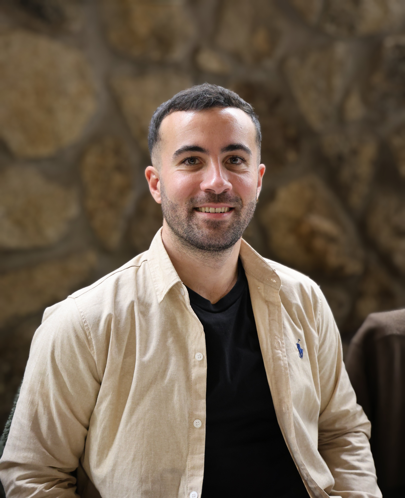

Actualmente estudiando:
• Administración de Sistemas Informáticos en Red (ASIR)
• Master en Ciberseguridad

Sobre mí:
Mi trayectoria profesional comenzó en el sector audiovisual, donde me formé en Realización de Proyectos Audiovisuales y Espectáculos y trabajé durante más de cuatro años en la grabación y edición de eventos y programas, así como en directos para televisión, conexiones y emisiones en vivo.
Aunque mi formación inicial es audiovisual, la tecnología siempre ha estado muy presente en mi trabajo, en ese entorno empecé a “cacharrear” con equipos informáticos y técnicos, lo que despertó aún más mi interés por el mundo de la informática.
Durante varios años también formé parte del negocio familiar relacionado con el cuidado de animales. Esta experiencia me enseñó la importancia de la responsabilidad, la constancia y el trato cercano con el cliente.
Con el tiempo decidí dar un giro a mi trayectoria profesional y apostar de lleno por la informática, un campo que siempre me había llamado la atención. Actualmente estoy estudiando el Ciclo Formativo de Grado Superior en Administración de Sistemas Informáticos en Red (ASIR), junto con un máster en Ciberseguridad, con el objetivo de seguir aprendiendo y especializarme en un sector en constante evolución y que siempre me “picó” la curiosidad.
Me gusta implicarme en lo que hago, aprender cosas nuevas y aportar todo lo que esté en mi mano. Busco una oportunidad en el ámbito de la informática que me permita desarrollar mi carrera profesional, seguir creciendo y aplicar tanto mis conocimientos técnicos como la experiencia adquirida en etapas anteriores.
Formación
Técnico superior en Administración de Sistemas Informáticos en Red (ASIR) ThePower FP - Caja Mágica
(Actualmente cursando)
Master en Ciberseguridad ThePower FP - Caja Mágica
(Actualmente cursando)
Técnico superior en Realización de Proyectos Audiovisuales y Espectáculos IES Jose Luis Garci
(2016 - 2018)
Experiencia
Empleado de servicios para animales / Redes Sociales / Web
By-Segurican
(2022 - 2025)
Técnico de grabación y edición audiovisual
8mm Producciones
(2018 - 2022)
Empleado de servicios para animales
By-Segurican
(2013 - 2016)
Proyectos
Proyecto de Diseñar e implementar una red pequeña y funcional para una empresa
Diseñar e implementar una red pequeña y funcional, utilizando el programa Cisco Packet Tracer incluyendo el plan de direccionamiento IPv4, la configuración de dispositivos y la comprobación de conectividad.
Proyecto de Diseñar un modelo entidad-relación y su esquema relacional
Creación de un modelo entidad-relación utilizando draw.io para una base de datos de gestión del Festival RockFest, incluyendo la definición de entidades, atributos y relaciones, así como su posterior transformación al esquema relacional.
Creación de un documento detallado en formato Word que abarque distintos conceptos fundamentales del hardware, incluyendo la descripción y funcionamiento de componentes esenciales como la CPU, memoria RAM, almacenamiento, placas base y periféricos, así como su integración en sistemas informáticos.